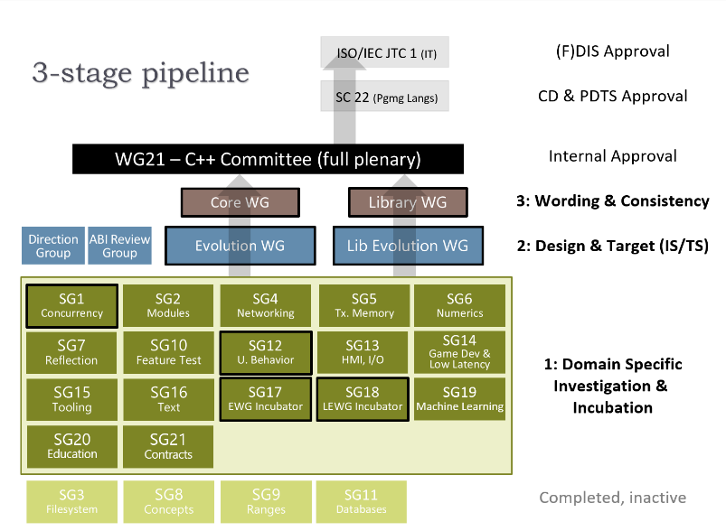

Types of Standardization

Committee
You can imagine a committee as a group of power oligarchs that control what gets standardized and what doesn’t
The example given is the C++ Committee, it is a hierarchy, divided into many groups there are the SG (Study Groups) that accept and review new papers that are submitted about new possible ideas and features to the C++ language or the STL (Standard Library), then if a feature is accepted by the SG it is then sent to Design & Target, where there is an overview of the implementation of the new feature at hand, then it is sent to Wording & Consistency to make sure the feature is consistent and to write the specification for the feature in “Standardese” (like Legalese but for standards). Then all the members come together to a consensus to see whether there are any conflicts or any disapprovals (consensus by majority). It is then approved into the ISO (International Organization for Standardization) which is a general body that approves international standards.
Problems
In the OSS (Open Source Software) world there exists many problems relevant to standards, with the ability to fork repositories, anyone can add anything to an open source repository. In order to maintain order, there are many systems in-place that can restrict who can contribute and who decides to change.
Benevolent Dictators for Life (BDFL)
In many occurrences of OSS. there is one person at the head of a project who is the sole owner and dictator of said project and it is their job to guide it how they see fit, they have the final say in any argument what gets added and what gets removed. Now in OSS, Benevolent Dictators have to stay benevolent because if a large enough majority disagrees with the ruler’s decisions, there is a high likelihood that the project will be forked (a copy), with new leaders and contributors.

Examples
Linus Torvalds
The Linux repository is under the name of its owner Linus, who has the final say in what happens